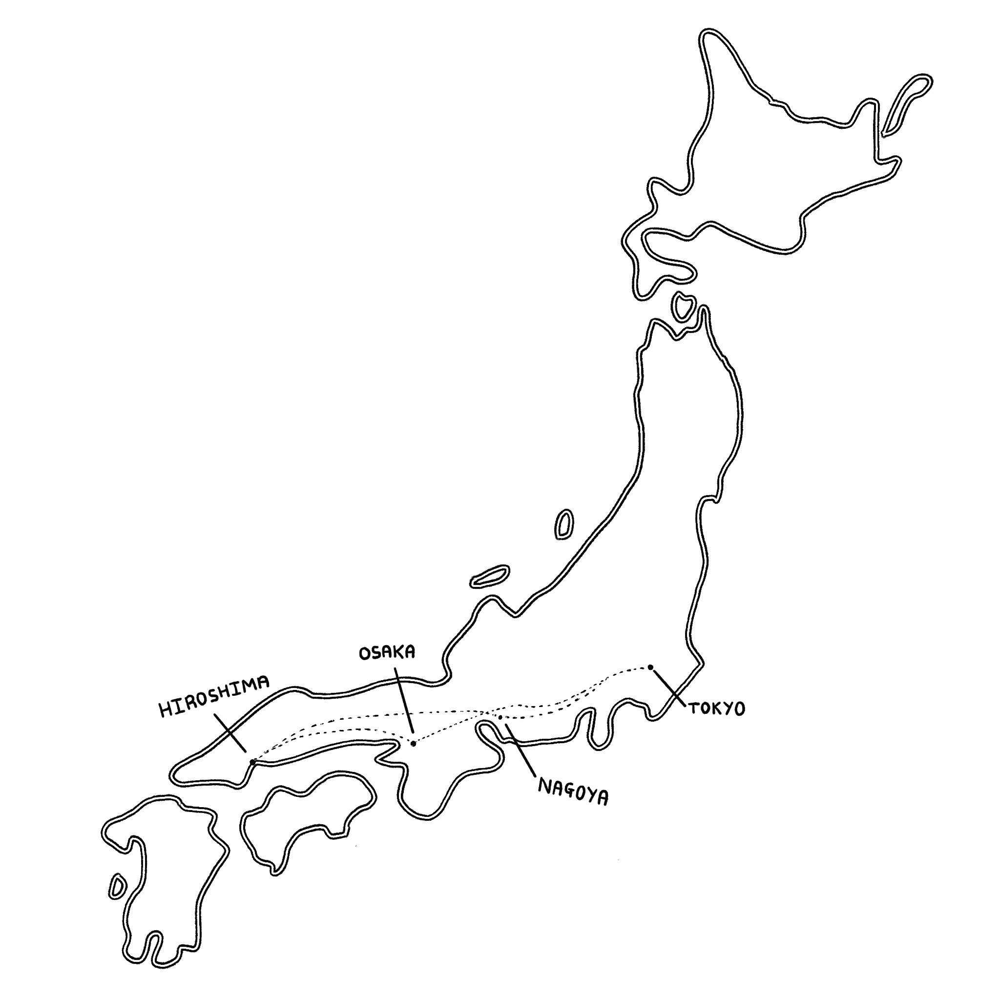

Date: July 26th - August 14th
Weather: Sunny, 32°C - 37°C
日本を探検する
In late July, my friend and I embarked on a wonderful three-week adventure through Japan. Our journey was a round trip, commencing and concluding in Tokyo. Along the way, we explored destinations such as Osaka, Kyoto, Hiroshima, Nagoya, and, of course, returned to Tokyo.
We also took a a few day trips out to places like: Nara, Hakone, kanagawa, Itsukushima and even Universal Studios in Osaka!
